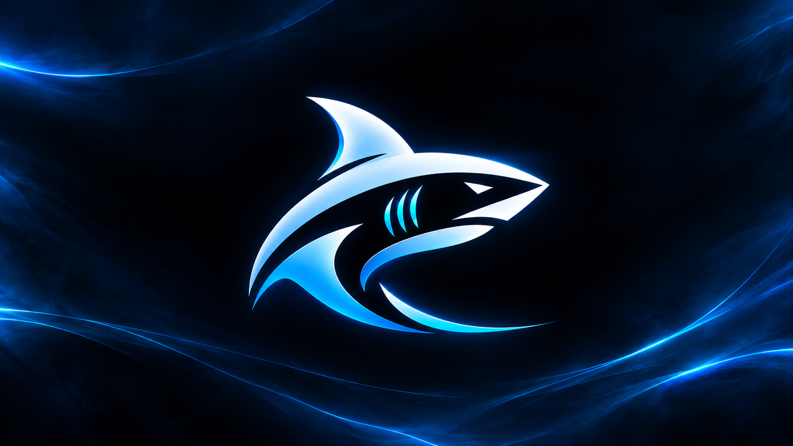
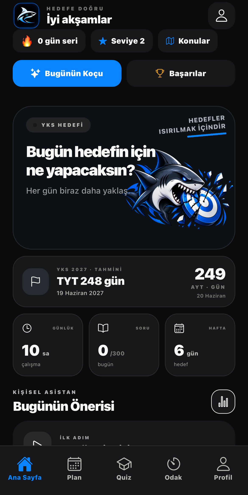
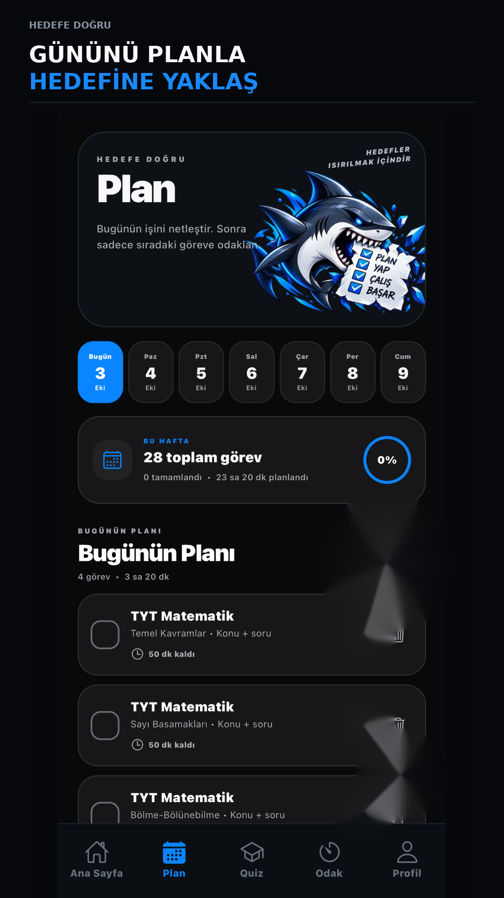
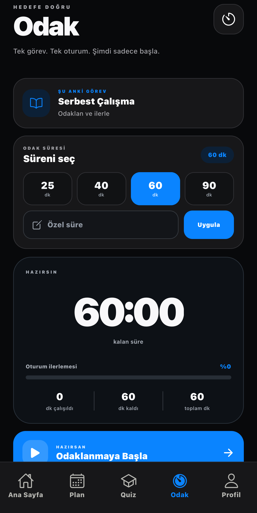
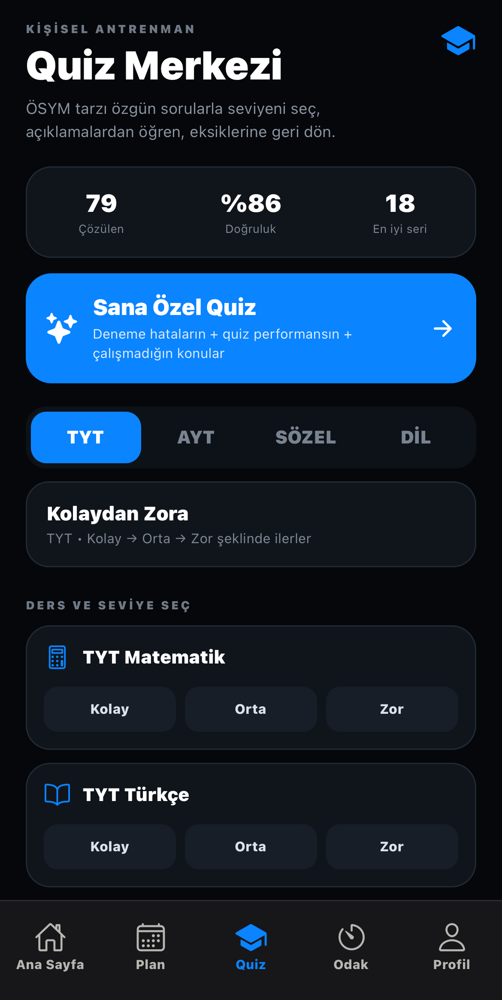
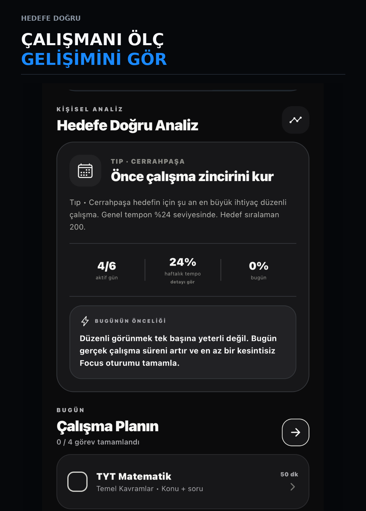
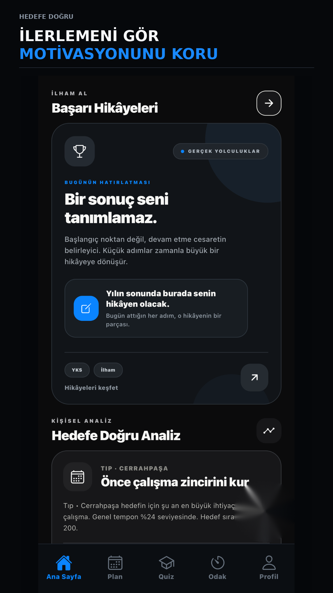
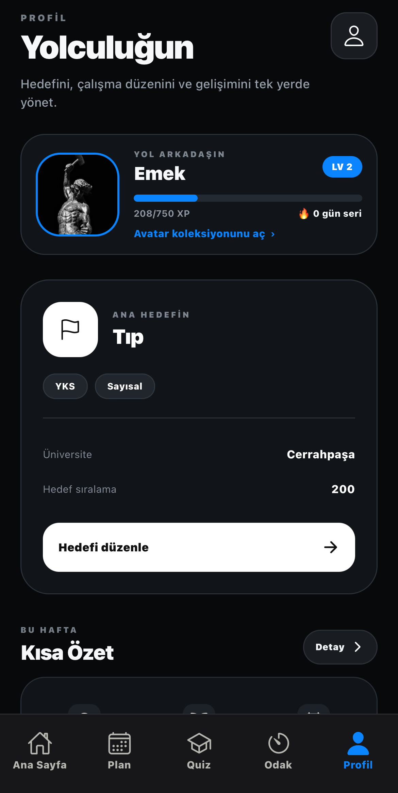

Planla
Hedefine ve eksiklerine göre gününü netleştir.

HEDEFE DOĞRUUygulamayı keşfet ↗Planını kur. Odağını koru. Seviyene uygun sorular çöz. Gelişimini gör. Hedefe Doğru, sınav yolculuğunu tek bir sistemde toplar.

HEDEFE DOĞRU
TEK AKIŞ
Günün ne yapacağını düşünmekle değil, yaparak geçsin. Her adım bir sonrakini besler.
Hedefine ve eksiklerine göre gününü netleştir.
Tek göreve gir, süreyi başlat ve dikkatini koru.
Kolaydan zora, seviyene uygun sorularla kendini test et.
Temponu ve gelişimini gör; sıradaki hamleni bil.
GÜNLÜK PLAN
Çalışma hedeflerin, görevlerin ve günün akışı tek ekranda. Karmaşayı azalt, doğrudan çalışmaya başla.

ODAK MODU
25, 40, 60 veya 90 dakika. Süreni seç, oturumu başlat ve ilerlemeyi görünür hale getir.

KİŞİSEL ANTRENMAN
TYT, AYT, Sözel ve Dil. Kolaydan zora ilerle veya deneme hataların, quiz performansın ve eksik konularınla Sana Özel Quiz'e gir.

KİŞİSEL ANALİZ
Aktif gün, tempo, çalışma planı ve günün önceliği. Hedefe Doğru veriyi yalnızca göstermez; sonraki adımını anlaşılır hale getirir.


İLERLEMEN GÖRÜNÜR
Çalışma serin, başarıların ve ilerlemen kaybolmaz. Her gün yaptığın işi bir yolculuğa dönüştür.
SENİN YOLCULUĞUN
Bölümünü, üniversiteni, sıralama hedefini, seviyeni ve yol arkadaşını tek profilde yönet.

HEDEFE DOĞRU
Planla. Odaklan. Çöz. Analiz et. Hedefine yaklaş.
Google Play'de yakında ↗